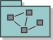

| 工件：工作版本 |
|  |
|
用途
|
从实施中的其他元素构造的工作版本的目的是交付系统运行时功能和能力的可测试子集。Rational Unified Process（RUP）建议在迭代期间构造一系列工作版本，当添加或改进实施子系统的元素时，对每个工作版本添加能力。可以在系统的所有级别（包括单个或多个子系统）上构造工作版本，但在 RUP 中，我们特别关注在工作产品：集成构建计划中定义的工作版本，因为这些工作版本是完成迭代的踏脚石。如果系统大小或复杂性证明有必要，可以将集成构建计划改进为多个计划，涵盖各个子系统。 注意，实施者可以因为某些原因（例如单元测试），在适当的时候，通过使用实施者专用开发工作空间以及子系统和系统集成工作空间中的元素来构造非正式的工作版本。但是，就此处使用的该术语而言，工作版本是由集成者从确定的版本元素中构造的，这些版本元素是由实施者交付到子系统或系统集成工作空间中的（如工作产品：集成构建计划中所定义）。 |
关系
| 角色 | 负责人: | 修改者: |
|---|---|---|
| 任务 | 输入至: | 输出自: |
| 流程使用情况 | ||
定制
| 说明选项 | UML 说明：实施模型中的包（其顶级包或实施子系统），构造型为 <<build>>。
工作版本显然是必需的，但是项目产生的工作版本的类型将随着生命周期而有所变化。在先启阶段中，主要问题可能在于产生一个原型，作为更好地理解问题或与客户交流的一种方法；在精化阶段中，要产生一个稳定的体系结构，而在构建中，要添加功能。在移交阶段中，侧重点将转向确保软件达到可交付的质量。 |
|---|
© Copyright IBM Corp. 1987, 2006. All Rights Reserved. |